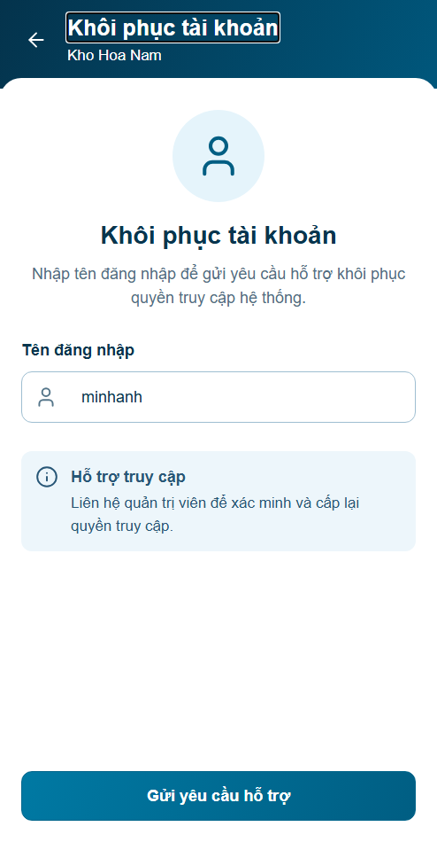
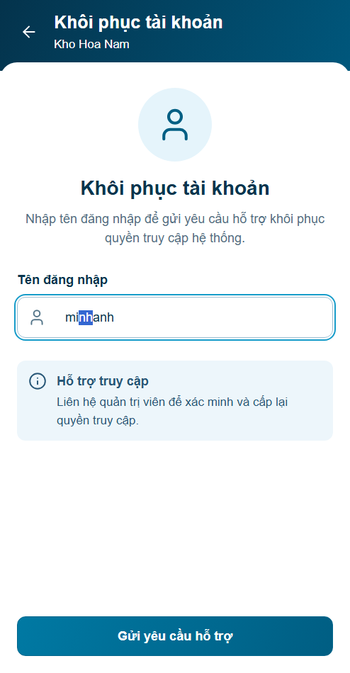
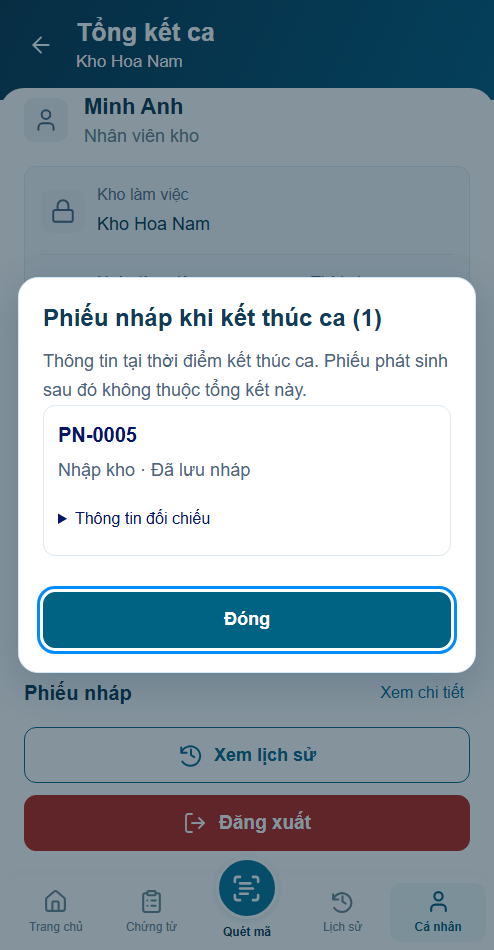
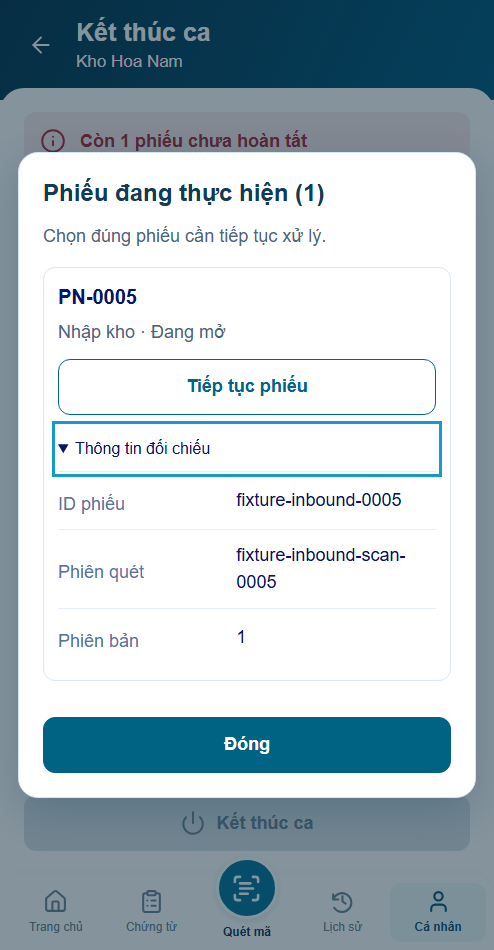

P14 r06 · Sửa lỗi UI/UX và vòng đời phiên
35Node/53nhóm browser đạt. Giữ bố cục r05; visual chờ review, backend chưa nghiệm thu.
Báo cáo và nguyên nhân · Bốn panel
- Focus/caret trở lại ô tên đăng nhập khi gửi lỗi.
- Mã yêu cầu fixture duy nhất, ngàyVN nhất quán.
- Disclosure thao tác được bằngTab/Enter; spacing dialog rõ ràng.
- Đăng nhập lại sau hết phiên không làm kẹt thao tác; request về muộn phải đối chiếu.
- Cache địa chỉ chỉ đọc không làm phiếu đã lưu trở thành chưa lưu.
Trước · focus bị mất sau lỗi

Sau · giữ focus/caret

Trước · Tab không tới disclosure

Sau · disclosure mở bằng bàn phím

Biên nhận r06

Tổng kết giữ bố cục r05

Ảnh kiểm lỗi và ảnh default có clock/nhánh ghi trong report; không dùng chúng làm baseline mới.